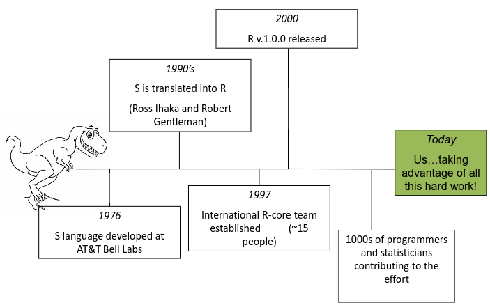
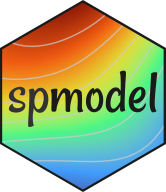
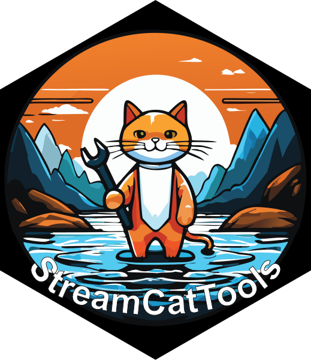

install.packages('tidyverse')
install.packages('ggplot2')
install.packages('data.table')1 What is R and why use it?
There are several advantages to using R in your work, especially as the R ecosystem as exanded and R has become the default langauge for many scientists.
- A language and environment for statistical computing and graphics.
- R is lightweight, free, open-source and cross-platform.
- Works with contributed packages, including
tidyverse. - Automation and recording of workflow (reproducibility).
- Optimized work flow - data manipulation, analysis and visualization all in one place.
- R does not alter underlying data - manipulation and visualization in memory.
- R is great for repetitive graphics.

1.1 Why use R for GIS workflows?
- Spatial and statistical analysis in one environment (GIS suddenly feels like R).
- Leverage statistical power of R (i.e. modeling spatial data, data visualization, statistical exploration).
- Can handle vector and raster data, as well as work with spatial databases and pretty much any data format spatial data comes in.
- R’s GIS capabilities growing rapidly right now - new packages added monthly.
1.2 Drawbacks to using R for GIS work
- R not as good for interactive use as desktop GIS applications like ArcGIS or QGIS (i.e. editing features, panning, zooming, and analysis on selected subsets of features).
- Explicit coordinate system handling by the user, no on-the-fly projection support.
- In memory analysis does not scale well with large GIS vector and tabular data.
- Steep(ish) learning curve.
An ideal solution for many tasks is using R in conjunction with traditional GIS software.
R runs on contributed packages - it has core functionality, but all the spatial work we would do in R is contained in user-contributed packages. While GIS functionality in R was originally handled with the sp, rgdal, rgeos packages for vector data and the raster package for rasterized data, much of this work as moved to the sf package for vector data and terra or stars packages for rasters. We’ll be using sfand terra during the workshop.
1.3 Preliminaries
1.3.1 Install R
Prior to the start of the workshop everyone will need to have the software installed and tested. You will need to have R, Rtools, and RStudio. Please get at least R version > 4.0 and the compatible version of R tools: R CRAN.Rtools will be necessary to install non-CRAN repositories from GitHub (see below).
1.3.2 Install RStudio
Please also make sure you have a version of Posit’s RStudio installed that is compatible with your version of R/Rtools: RStudio.
1.3.3 Install R Packages
Common Packages
First, we need to install several R packages. R operates on user-contributed packages, and we’ll be using several of these in this workshop. We will use several packages that are core to data management in R: tidyverse, ggplot2, data.table.
If you haven’t done so already for these packages, please run these lines of code:
Geospatial Packages
In addition to these core packages, we’ll be using several CRAN packages specifically developed for GIS tasks or handling/obtaining spatial data:
-
sf- The Simple Features package is for working with vector data (points, lines, polygons). -
terra- The Terra package handles raster data. -
prism- PRISM facilitates the download and extraction of Oregon State University’s PRISM climate data. -
tigris- Census TIGER/Line package for accessing political boundaries of the U.S. -
nhdplusTools- nhdplusTools is a package for navigating and extracting data from the medium resolution NHDPlus.
We’ll also need a couple of packages to handle watershed delineation from a USGS API:
jsonlite- jsonlite package for parsing results from API queries.geojson- geojson package for parsing geographic json results.mapview- mapview is a package for quickly making interactive maps in R, but especially useful within RMarkdown or Quarto documents.
install.packages('sf')
install.packages('terra')
install.packages('prism')
install.packages('tigris')
install.packages('nhdplusTools')
install.packages('jsonlite')
install.packages('geojson')
install.packages('mapview')
install.packages('FedData')
install.packages('tidyterra')New EPA Packages
Finally, we will use three new packages developed by researchers at the U.S. Environmental Protection Agency. These packages will need to installed from GitHub:

spmodel - The spmodel package is the basis of this workshop. Although this package is available on the CRAN, we will use the version from GitHub with the latest updates.

StreamCatTools - The StreamCatTools package retrieves StreamCat and LakeCat data via an API.

finsyncR - The finsyncR package greatly facilitates the retrieval and harmonization of EPA and USGS stream macroinvertebrate and fish data.
To install these packages:
# spmodel from CRAN
install.packages('spmodel')
# Packages from GitHub
install.packages('remotes')
remotes::install_github("USEPA/finsyncR", build_vignette = TRUE)
remotes::install_github("USEPA/StreamCatTools", build_vignettes = FALSE)